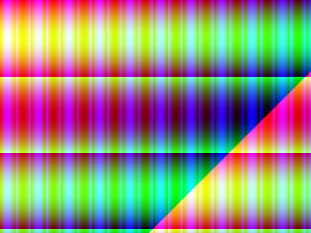
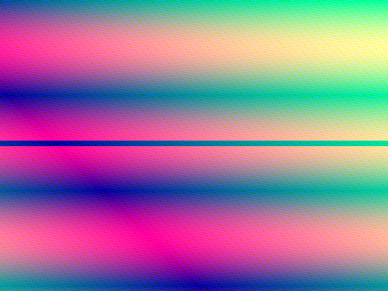
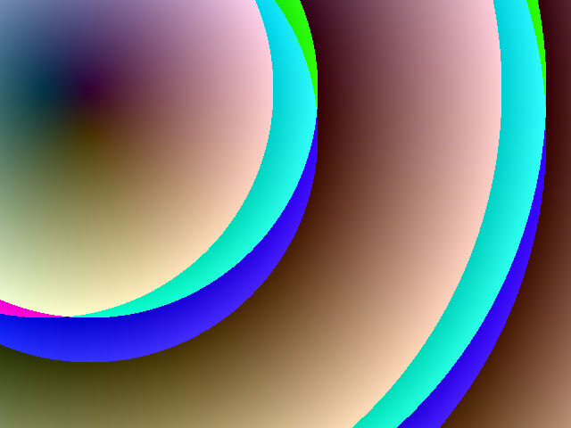
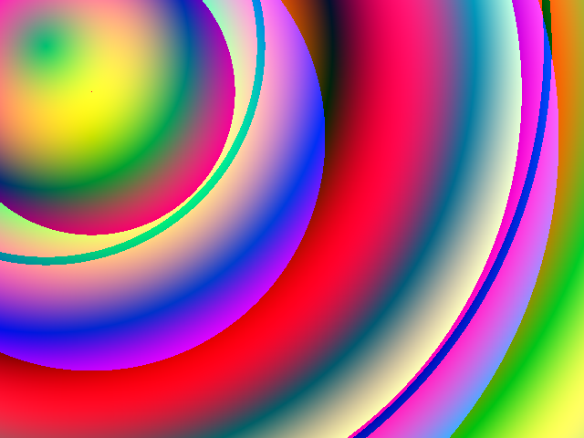
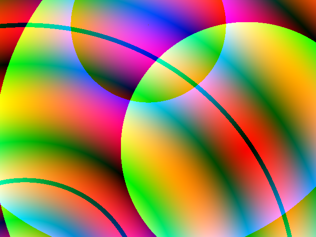
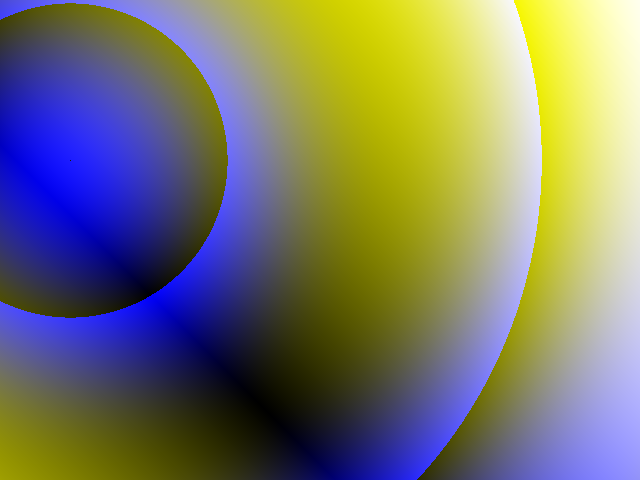

#lang racket
(require 2htdp/image)
There’s a function, color-list->bitmap, that takes a list of colors and returns an image:
> (color-list->bitmap (for/list ([i (in-range 0 256)]) (color i i i)) 16 16)
Can make like an image-generator-thing that takes something like a position-to-colour-function as argument.
(define ((gen-img img-w img-h) gen-f) (define f (gen-f img-w img-h)) (define colors (for*/list ([y (in-range img-h)] [x (in-range img-w)]) (f x y))) (color-list->bitmap colors img-w img-h))
> ((gen-img 256 10) (λ (w h) (λ (x y) (color x y 127))))
Good. Let’s also some helper-stuff:
(define (px x) (modulo (if (exact-integer? x) x (inexact->exact (floor x))) 256)) (define (px* x) (abs (remainder (if (exact-integer? x) x (inexact->exact (floor x))) 256))) (define (fl x) (px (* x 256))) (define (fl* x) (px* (* x 256)))
Okay now can make some images.
> ((gen-img 640 480) (λ (img-w img-h) (λ (x y) (color (fl (cos (/ (+ x y) 500))) (fl (sin (/ y 50))) (fl (sin (/ x 10))))))) 
> ((gen-img 640 480) (λ (img-w img-h) (λ (x y) (color (fl* (sin (/ y 50))) (fl* (cos (/ (+ (- img-w x) y) 500))) (fl* (sin (/ (+ (* y img-w) x) 10))))))) 
Also a distance-between-two-points-function, because that’s pretty circly.
(define (dist from-x from-y to-x to-y) (define (^2 x) (* x x)) (sqrt (+ (^2 (- to-x from-x)) (^2 (- to-y from-y)))))
> ((gen-img 640 480) (λ (img-w img-h) (λ (x y) (color (px (dist x y 50 100)) (px (dist x y 100 100)) (px (dist x y 100 150)))))) 
> ((gen-img 640 480) (λ (img-w img-h) (λ (x y) (color (fl* (sin (/ (dist x y 50 50) 50))) (fl (cos (/ (dist x y 100 100) 100))) (px (dist x y 100 150)))))) 
> ((gen-img 640 480) (λ (img-w img-h) (λ (x y) (color (fl* (sin (/ (dist x y 50 600) 50))) (px (dist x y 500 300)) (fl (cos (/ (dist x y 300 50) 100))))))) 
> ((gen-img 640 480) (λ (img-w img-h) (λ (x y) (color (fl* (cos (/ (+ (- img-w x) y) 500))) (fl* (cos (/ (+ (- img-w x) y) 500))) (fl (cos (/ (dist x y 70 160) 100))))))) 